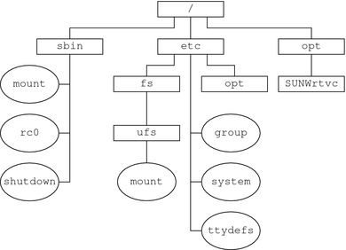
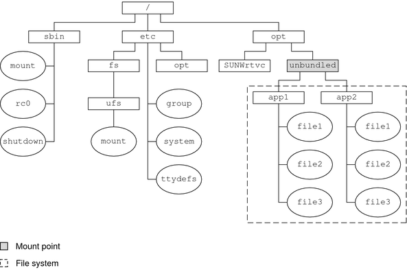

|
|||
|
1. Managing Removable Media (Overview) 2. Managing Removable Media (Tasks) 3. Accessing Removable Media (Tasks) 4. Writing CDs and DVDs (Tasks) 5. Managing Devices (Overview/Tasks) 6. Dynamically Configuring Devices (Tasks) 7. Using USB Devices (Overview) 9. Using InfiniBand Devices (Overview/Tasks) 11. Administering Disks (Tasks) 12. SPARC: Adding a Disk (Tasks) 13. x86: Adding a Disk (Tasks) 14. Configuring Solaris iSCSI Targets and Initiators (Tasks) 15. Configuring and Managing the Solaris Internet Storage Name Service (iSNS) 16. The format Utility (Reference) 17. Managing File Systems (Overview) Where to Find File System Management Tasks Commands for File System Administration Determining a File System's Type 18. Creating UFS, TMPFS, and LOFS File Systems (Tasks) 19. Mounting and Unmounting File Systems (Tasks) 20. Using The CacheFS File System (Tasks) 21. Configuring Additional Swap Space (Tasks) 22. Checking UFS File System Consistency (Tasks) 23. UFS File System (Reference) 24. Backing Up and Restoring File Systems (Overview) 25. Backing Up Files and File Systems (Tasks) 26. Using UFS Snapshots (Tasks) 27. Restoring Files and File Systems (Tasks) 28. UFS Backup and Restore Commands (Reference) 29. Copying UFS Files and File Systems (Tasks) |
Mounting and Unmounting File SystemsBefore you can access the files on a file system, you need to mount the file system. When you mount a file system, you attach that file system to a directory (mount point) and make it available to the system. The root (/) file system is always mounted. Any other file system can be connected or disconnected from the root (/) file system. When you mount a file system, any files or directories in the underlying mount point directory are unavailable as long as the file system is mounted. These files are not permanently affected by the mounting process. They become available again when the file system is unmounted. However, mount directories are typically empty because you usually do not want to obscure existing files. For example, the following figure shows a local file system, starting with a root (/) file system and the sbin, etc, and opt subdirectories. Figure 17-1 Sample root (/) File SystemTo access a local file system from the /opt file system that contains a set of unbundled products, you must do the following:
Figure 17-2 Mounting a File SystemFor step-by-step instructions on how to mount file systems, see Chapter 19, Mounting and Unmounting File Systems (Tasks). The Mounted File System TableWhenever you mount or unmount a file system, the /etc/mnttab (mount table) file is modified with the list of currently mounted file systems. You can display the contents of this file by using the cat or more commands. However, you cannot edit this file. Here is an example of an /etc/mnttab file: $ more /etc/mnttab /dev/dsk/c0t0d0s0 / ufs rw,intr,largefiles,logging,xattr,onerror =panic,dev=2200008 1093882623 /devices /devices devfs dev=4340000 1093882603 ctfs /system/contract ctfs dev=4380001 1093882603 proc /proc proc dev=43c0000 1093882603 mnttab /etc/mnttab mntfs dev=4400001 1093882603 swap /etc/svc/volatile tmpfs xattr,dev=4440001 1093882603 /dev/dsk/c0t0d0s6 /usr ufs rw,intr,largefiles,logging,xattr,onerror =panic,dev=220000e 1093882623 objfs /system/object objfs dev=44c0001 1094150403 fd /dev/fd fd rw,dev=45c0001 1093882624 swap /var/run tmpfs xattr,dev=4440002 1093882625 swap /tmp tmpfs xattr,dev=4440003 1093882625 /dev/dsk/c0t0d0s7 /export/home ufs rw,intr,largefiles,logging,xattr ,onerror=panic,dev=220000f 1093882637 $ The Virtual File System TableManually mount file systems every time you wanted to access them would be a very time-consuming and error-prone. To avoid these problems, the virtual file system table (the /etc/vfstab file) provides a list of file systems and information on how to mount them. The /etc/vfstab file provides two important features:
A default /etc/vfstab file is created when you install a system, depending on the selections during installation. However, you can edit the /etc/vfstab file on a system whenever you want. To add an entry, the information you need to specify is as follows:
The following is an example of an /etc/vfstab file. Comment lines begin with #. This example shows an /etc/vfstab file for a system with two disks (c0t0d0 and c0t3d0). $ more /etc/vfstab #device device mount FS fsck mount mount #to mount to fsck point type pass at boot options # fd - /dev/fd fd - no - /proc - /proc proc - no - /dev/dsk/c0t0d0s1 - - swap - no - /dev/dsk/c0t0d0s0 /dev/rdsk/c0t0d0s0 / ufs 1 no - /dev/dsk/c0t0d0s6 /dev/rdsk/c0t0d0s6 /usr ufs 1 no - /dev/dsk/c0t0d0s7 /dev/rdsk/c0t0d0s7 /export/home ufs 2 yes - /dev/dsk/c0t0d0s5 /dev/rdsk/c0t0d0s5 /opt ufs 2 yes - /devices - /devices devfs - no - ctfs - /system/contract ctfs - no - objfs - /system/object objfs - no - swap - /tmp tmpfs - yes - $ In this example, the UFS file system entry for /export/home on the /dev/dsk/c0t0d0s7 slice will be automatically mounted on the /test mount point when the system boots. Note that, for root (/) and /usr, the mount at boot field value is specified as no. These file systems are mounted by the kernel as part of the boot sequence before the mountall command is run. For descriptions of each /etc/vfstab field and information on how to edit and use the file, see Chapter 19, Mounting and Unmounting File Systems (Tasks). The NFS EnvironmentNFS is a distributed file system service that can be used to share resources (files or directories) from one system, typically a server, with other systems on the network. For example, you might want to share third-party applications or source files with users on other systems. NFS makes the actual physical location of the resource irrelevant to the user. Instead of placing copies of commonly used files on every system, NFS allows you to place one copy on one system's disk and let all other systems access it from the network. Under NFS, remote files are virtually indistinguishable from local files. For more information, see Chapter 4, Managing Network File Systems (Overview), in System Administration Guide: Network Services. A system becomes an NFS server if it has resources to share on the network. A server keeps a list of currently shared resources and their access restrictions (such as read/write or read-only access). When you share a resource, you make it available for mounting by remote systems. You can share a resource in these ways:
For information on how to share resources, see Chapter 19, Mounting and Unmounting File Systems (Tasks). For a complete description of NFS, see Chapter 4, Managing Network File Systems (Overview), in System Administration Guide: Network Services. NFS Version 4Sun's implementation of the NFS version 4 distributed file access protocol is included in the Solaris release. NFS version 4 integrates file access, file locking, and mount protocols into a single, unified protocol to ease traversal through a firewall and improve security. The Solaris implementation of NFS version 4 is fully integrated with Kerberos V5, also known as SEAM, thus providing authentication, integrity, and privacy. NFS version 4 also enables the negotiation of security flavors to be used between the client and the server. With NFS version 4, a server can offer different security flavors for different file systems. For more information about NFS Version 4 features, see What’s New With the NFS Service in System Administration Guide: Network Services. Automounting or AutoFSYou can mount NFS file system resources by using a client-side service called automounting (or AutoFS). AutoFS enables a system to automatically mount and unmount NFS resources whenever you access them. The resource remains mounted as long as you remain in the directory and are using a file within that directory. If the resource is not accessed for a certain period of time, it is automatically unmounted. AutoFS provides the following features:
The AutoFS service is initialized by the automount utility, which runs automatically when a system is booted. The automountd daemon runs continuously and is responsible for the mounting and unmounting of NFS file systems on an as-needed basis. By default, the /home file system is mounted by the automount daemon. With AutoFS, you can specify multiple servers to provide the same file system. This way, if one of these servers is down, AutoFS can try to mount the file system from another machine. For complete information on how to set up and administer AutoFS, see System Administration Guide: IP Services. |
||
|